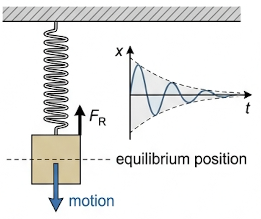
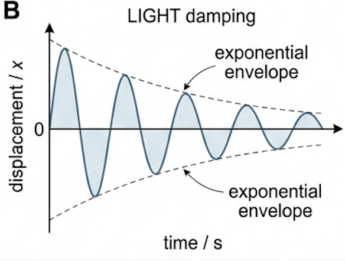
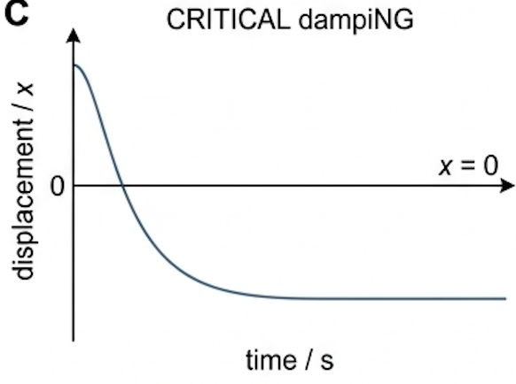
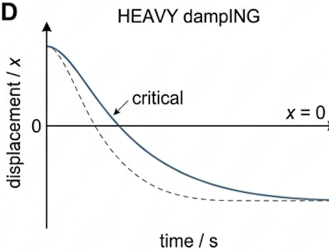
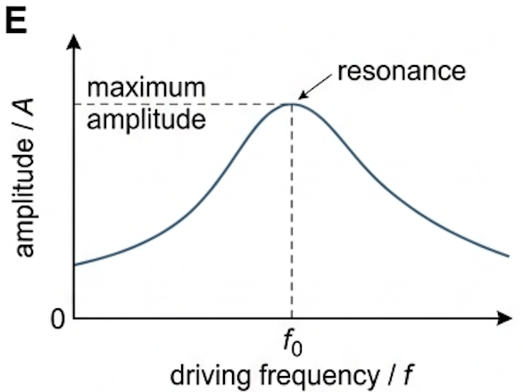
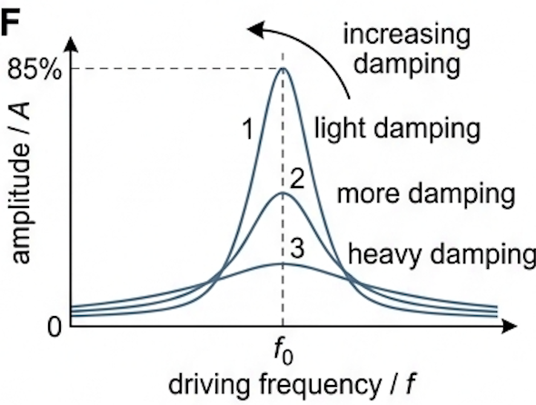
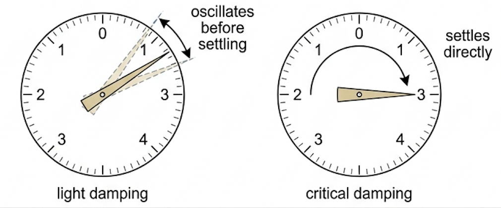

🎯 Hook – the swing that never keeps going
In practice, all oscillators eventually stop oscillating. Their amplitudes may decrease rapidly or gradually. This happens due to resistive forces, such as friction or air resistance, which act in the opposite direction to the motion of an oscillator. Resistive forces acting on an oscillating simple harmonic system cause damping, and the resulting motion is called damped oscillations. Damping continues until the oscillator comes to rest at the equilibrium position.

📐 Defining damping
Damping is defined as:
Two consequences follow, and examiners test both. First, the energy of the system falls, so the amplitude falls. Second, the frequency is unchanged: successive peaks and troughs stay equally spaced in time even as they shrink.
📉 Light damping
There are three degrees of damping, depending on how quickly the amplitude of the oscillations decreases: light damping, critical damping and heavy damping.
When oscillations are lightly damped, the amplitude does not decrease linearly — it decays exponentially with time. When a lightly damped oscillator is displaced from the equilibrium, it will oscillate with gradually decreasing amplitude. For example, a swinging pendulum decreases in amplitude until it comes to a stop. A graph for a lightly damped system consists of oscillations decreasing exponentially.
Key features of a displacement–time graph for a lightly damped system: there are many oscillations represented by a sine or cosine curve with gradually decreasing amplitude over time; this is shown by the height of the curve decreasing in both the positive and negative displacement values; the amplitude decreases exponentially; the frequency of the oscillations remains constant, which means the time period of oscillations must stay the same, and each peak and trough are equally spaced.

🚗 Critical damping
When a critically damped oscillator is displaced from the equilibrium, it will return to rest at its equilibrium position in the shortest possible time without oscillating. For example, car suspension systems prevent the car from oscillating after travelling over a bump in the road. The graph for a critically damped system shows no oscillations and the displacement returns to zero in the quickest possible time.
Key features of a displacement–time graph for a critically damped system: this system does not oscillate, meaning the displacement falls to 0 straight away; the graph has a fast decreasing gradient when the oscillator is first displaced until it reaches the x-axis; when the oscillator reaches the equilibrium position (\(x = 0\)), the graph is a horizontal line at \(x = 0\) for the remaining time.

🚪 Heavy damping
When a heavily damped oscillator is displaced from its equilibrium position, it will take a long time to return to its equilibrium position without oscillating. The system returns to equilibrium more slowly than the critical damping case. For example, door dampers prevent doors from slamming shut. A heavy damping curve has no oscillations, and the displacement returns to zero after a long period of time.
Key features of a displacement–time graph for a heavily damped system: there are no oscillations, which means the displacement does not pass 0; the graph has a slow decreasing gradient from when the oscillator is first displaced until it reaches the x-axis; the oscillator reaches the equilibrium position (\(x = 0\)) after a long period of time, after which the graph remains a horizontal line for the remaining time.

🔊 Effects of damping — the resonance curve
The effects of damping can be seen on a resonance curve. This is a graph of driving frequency \(f\) against amplitude \(A\) of oscillations. The graph peaks at the natural frequency \(f_0\) of the oscillator.
It has the following key features: when \(f < f_0\), the amplitude of oscillations increases; at the peak, where \(f = f_0\), the amplitude is at its maximum — this is resonance; when \(f > f_0\), the amplitude of oscillations starts to decrease. The maximum amplitude of the oscillations occurs when the driving frequency is equal to the natural frequency of the oscillator.
Damping reduces the amplitude of resonance vibrations. The height and shape of the resonance curve will therefore change slightly depending on the degree of damping. Note: the natural frequency \(f_0\) of the oscillator will remain the same.
As the degree of damping is increased, the resonance graph is altered in the following ways: the amplitude of resonance vibrations decreases, meaning the peak of the curve lowers; the resonance peak broadens; the resonance peak moves slightly to the left of the natural frequency when heavily damped. Therefore, damping reduces the sharpness of the resonance and the amplitude of oscillations at the resonant frequency.
📈 Graphs every examiner uses
| Graph type | Axes (X, Y) | Shape | What to read |
|---|---|---|---|
| Light damping | time \(t\), displacement \(x\) | Sine/cosine curve with exponentially decreasing amplitude, symmetric about \(x = 0\) | Constant period (equally spaced peaks and troughs); amplitude decaying exponentially in both directions |
| Critical damping | time \(t\), displacement \(x\) | No oscillation; fast decreasing gradient to the x-axis, then horizontal at \(x = 0\) | Shortest possible time to equilibrium with no overshoot |
| Heavy damping | time \(t\), displacement \(x\) | No oscillation; slow decreasing gradient, reaching \(x = 0\) after a long time | Displacement never passes 0; slower return than critical damping |
| Resonance curve | driving frequency \(f\), amplitude \(A\) | Rises for \(f < f_0\), peaks at \(f = f_0\), falls for \(f > f_0\) | Position of the peak (\(f_0\)); peak height and sharpness give the degree of damping |


✍️ Worked example – the mechanical weighing scale
A mechanical weighing scale consists of a needle which moves to a position on a numerical scale depending on the weight applied. Sometimes the needle moves to the equilibrium position after oscillating slightly, making it difficult to read the number on the scale to which it is pointing. Suggest, with a reason, whether light, critical or heavy damping should be applied to the mechanical weighing scale to read the scale more easily.

🔧 Real-world: suspension, doors and dials
Engineers choose the degree of damping to suit the job. Car suspension systems are critically damped so the car does not oscillate after travelling over a bump in the road. Door dampers are heavily damped to prevent doors from slamming shut. A weighing-scale needle is critically damped so it settles quickly enough to read.
🚀 HL Extension – sharpness of resonance
The sharpness of a resonance peak is described by the quality factor, the ratio of the resonant frequency to the width of the peak. Light damping gives a tall, narrow peak and a high \(Q\); heavy damping gives a low, broad peak and a low \(Q\).
Challenge: two identical pendulums are driven at a range of frequencies, one in air and one in water. Which has the taller, narrower resonance peak, and does its peak sit at the same frequency? (Answer: the one in air — less damping, so a taller and sharper peak; the natural frequency \(f_0\) is unchanged, but the heavily damped pendulum in water peaks slightly to the left of \(f_0\).)
⚠️ Trap corner – common mistakes
| Misconception | Correct view |
|---|---|
| Damping lengthens \(T\) | Damping does not slow the oscillation down: the frequency of damped oscillations does not change as the amplitude decreases; each peak and trough stay equally spaced |
| Resistive = restoring | They are different forces. Resistive force opposes the motion of the oscillator and causes damping; restoring force brings the oscillator back to the equilibrium position |
| Amplitude falls linearly | For light damping, The amplitude does not decrease linearly — it decays exponentially with time |
| Heavy stops it fastest | Heavy damping is not the fastest: Critical damping returns the oscillator to rest at equilibrium in the shortest possible time; heavy damping is slower than critical |
| Damping shifts \(f_0\) | Damping does not affect the natural frequency; \(f_0\) stays the same, though the resonance peak moves slightly to the left when heavily damped |
Complete the statements:
(b) A child on a swing oscillates back and forth once every second. Explain what happens to the amplitude and to the time period of the oscillations as the swing is damped. [2 marks]
(b) ✓ The amplitude decreases over time, because resistive forces act in the opposite direction to the motion and remove energy, until the oscillator comes to rest at the equilibrium position. ✓ The time period is unchanged — the frequency of damped oscillations does not change as the amplitude decreases, so the swing still takes one second regardless of the amplitude.
✓ Light damping: many oscillations, a sine or cosine curve with gradually decreasing amplitude, decaying exponentially in both the positive and negative displacement values, with each peak and trough equally spaced (constant period).
✓ Critical damping: no oscillation; the displacement falls to 0 straight away with a fast decreasing gradient, then a horizontal line at \(x = 0\).
✓ Heavy damping: no oscillation; a slow decreasing gradient reaching \(x = 0\) only after a long period of time, then horizontal.
✓ The heavily damped curve reaches \(x = 0\) later than the critically damped curve, and only the lightly damped curve passes below \(x = 0\).
(b) Discuss how the curve changes when the degree of damping is increased. [3 marks]
(b) ✓ The amplitude of resonance vibrations decreases, so the peak of the curve lowers. ✓ The resonance peak broadens. ✓ The peak moves slightly to the left of the natural frequency when heavily damped; the natural frequency \(f_0\) itself is unchanged, so damping reduces the sharpness of the resonance and the amplitude at the resonant frequency.
✓ Since the scale is read straight away after a weight is applied, ideally the needle should settle as quickly as possible; heavy damping would mean the needle will take some time to settle on the scale.
✓ Therefore, critical damping should be applied to the weighing scale so the needle can settle as quickly as possible to read from the scale.